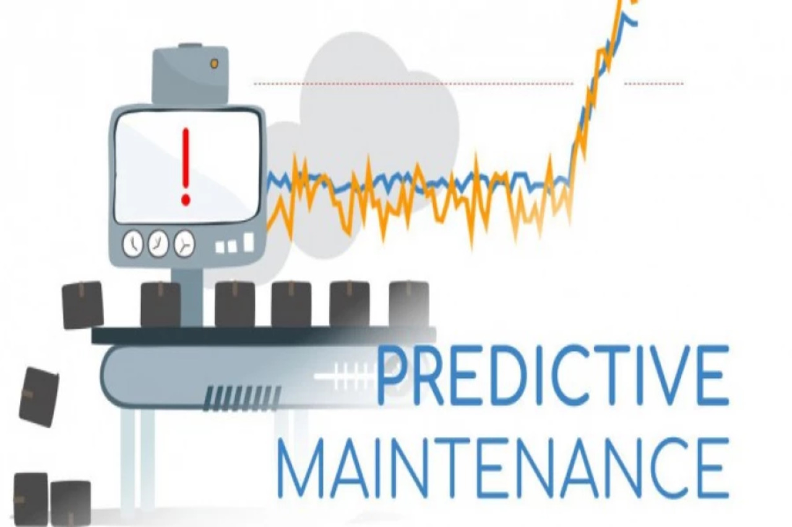
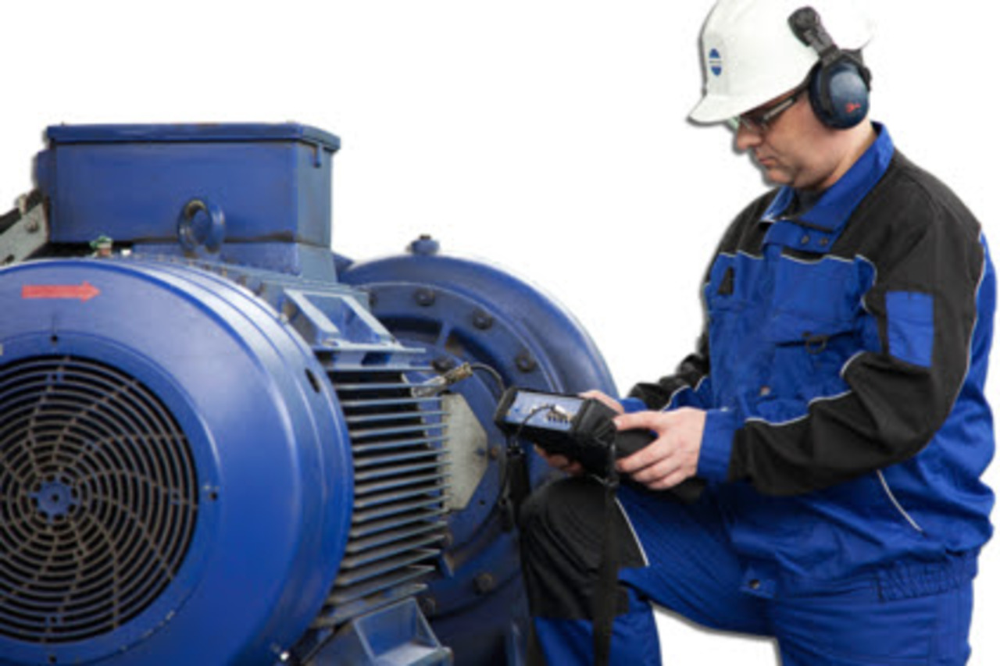
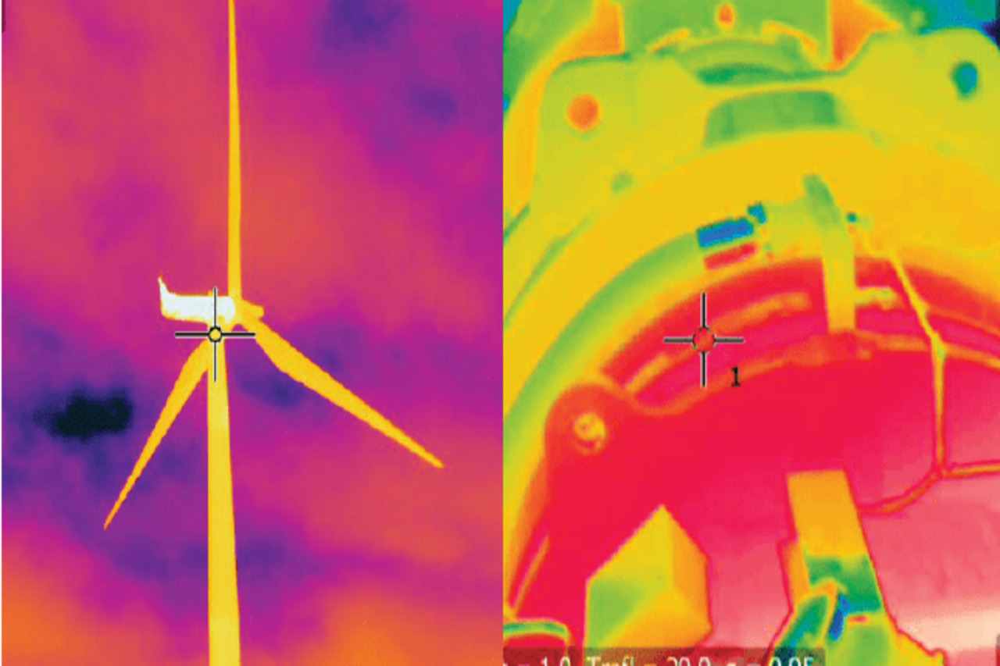
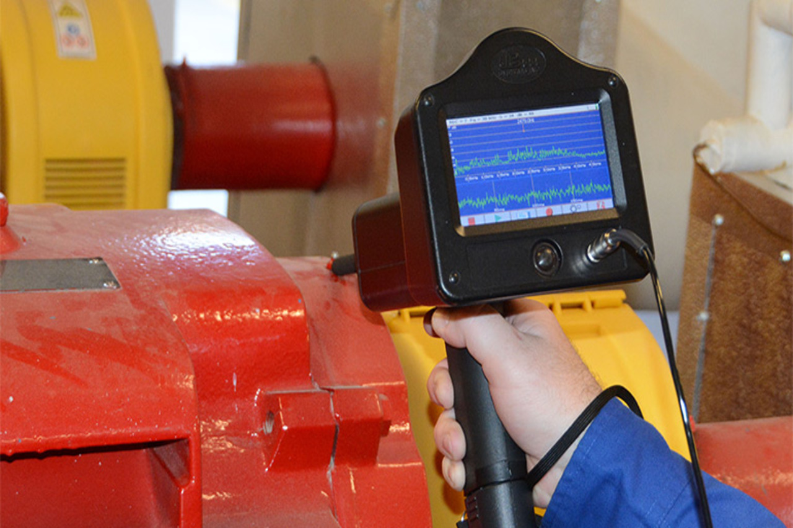
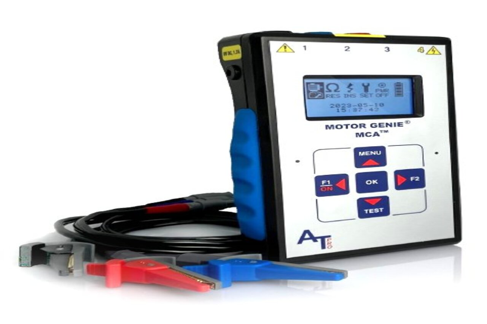
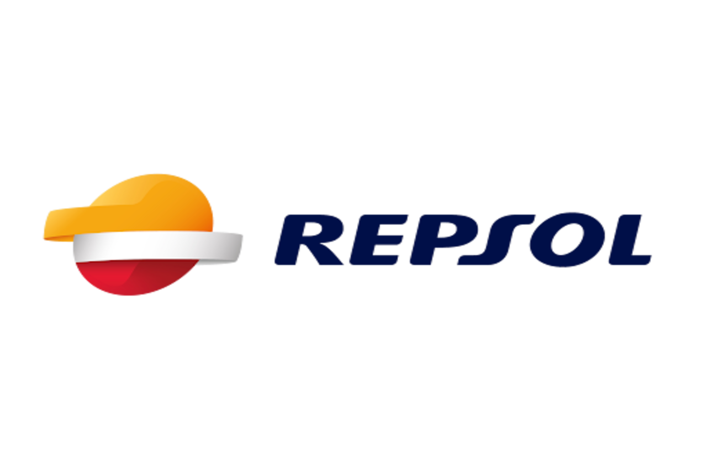
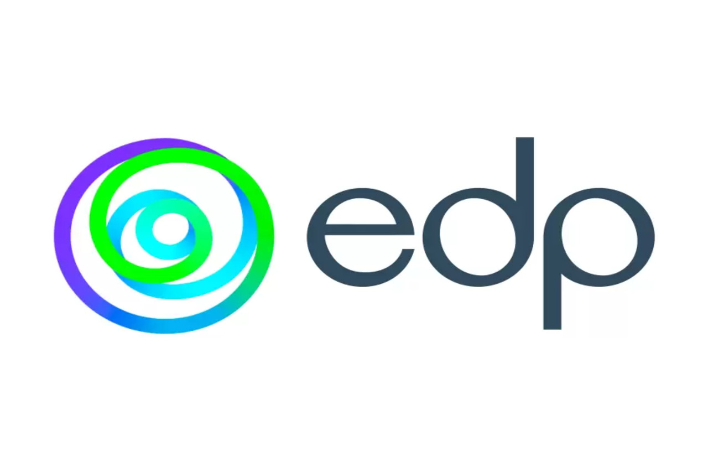

Nuestro producto

1Servicios
Nuestro servicio avanzado de monitorización y diagnóstico temprano permite identificar y corregir fallos potenciales antes de que se conviertan en problemas costosos, minimizando tiempos muertos y prolongando la vida útil de tus activos.
2Formacion
Capacitamos a tu equipo con las habilidades y conocimientos necesarios para anticipar y prevenir fallos en los activos. Te proporcionamos herramientas prácticas para optimizar la eficiencia operativa, así como implementar estrategias de mantenimiento adecuadas a cada sector.
Portafolio
Conocer mas

Vibraciones

Termografia

Ultrasonidos

Ensayos Electricos
Monitorización
Formación
Que dicen nuestros clientes

Empresa
Predictivos LVZ son muy profesionales y responsables.

Empresa
Gracias a Predictivos LVZ hemos aumentado nuestra disponibilidad de activos hasta en un 50%.